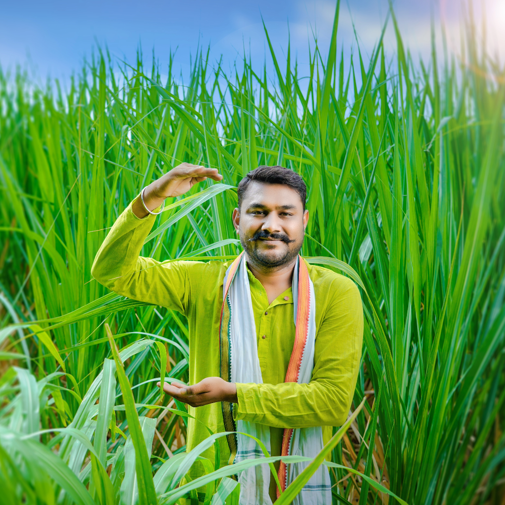
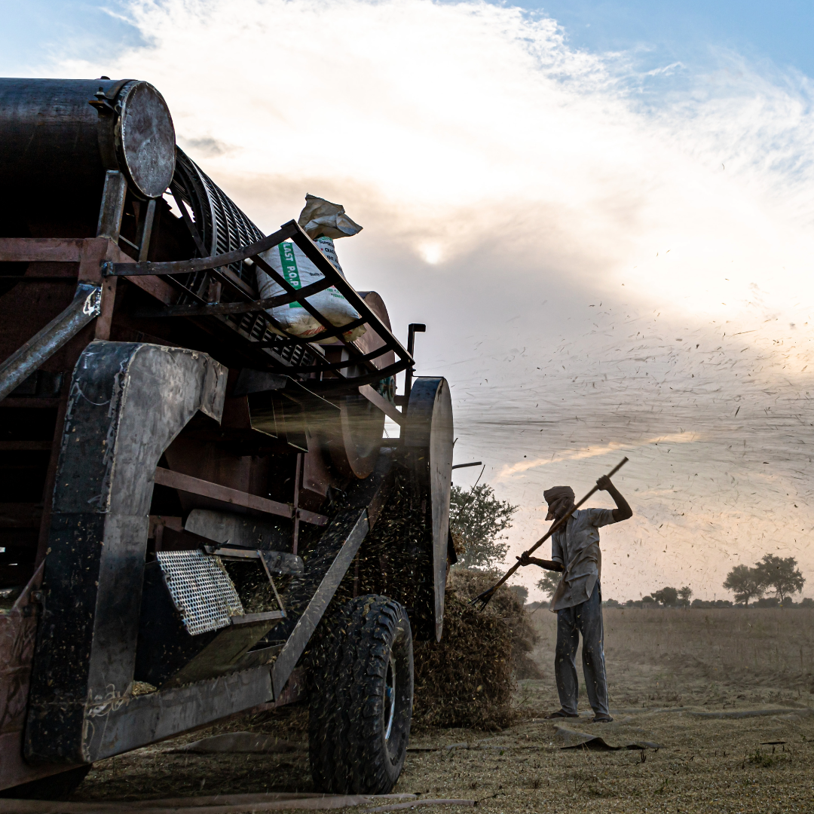
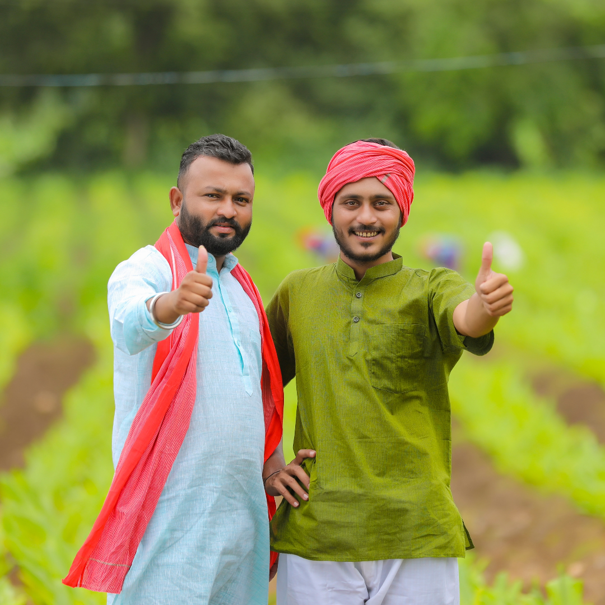

Benefits:
Under this scheme, small and marginal farmers receive direct income support of Rs. 6,000 per year in three equal installments. It aims to provide financial assistance for agricultural inputs and support their income.

Benefits:
PMFBY is a crop insurance scheme that provides financial protection to farmers in case of crop loss or damage due to natural calamities, pests, or diseases. It aims to ensure the financial stability of farmers.
Benefits:
While not exclusively a farmer scheme, MGNREGA provides rural employment opportunities, which can benefit farmers during lean agricultural seasons. It helps in increasing rural income and provides a safety net for agricultural laborers.

Benefits:
PKVY promotes organic farming and certification by providing financial assistance to farmers for adopting organic farming practices. It aims to improve soil health and reduce the use of chemical fertilizers and pesticides.

Benefits:
KCC provides farmers
with access to affordable credit for various agricultural and allied
activities. It offers flexibility in repayment, helping farmers manage
their finances effectively.

Benefits:
RKVY supports the development of agriculture and allied sectors by providing funds for various projects, including infrastructure development, agricultural research, and extension services.